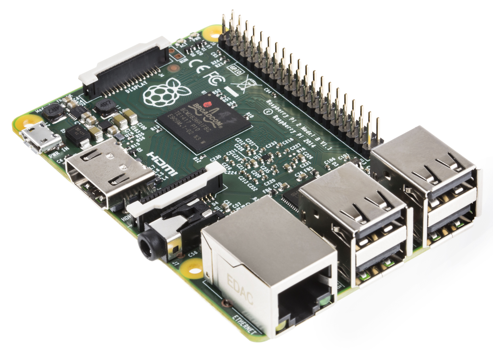

class: center, middle # Bob: A Scalaz-Stream controlled Raspberry Pi robot ## Martin Carolan --- # Personal goals for this project * Gentle re-introduction to electronics * Become familiar with Scalaz-Stream and http4s --- # Goals for you lot -- * Inspire you to play around with Raspberry Pi's * Give a brief introduction to Scalaz-Stream * Show you why it's quite a nice model --- # What's a Raspberry Pi? * A small, low power, computer * Doesn't cost much £££ * It's really easy to hook them up to things * 26 general purpose input/output pins * USB, video, audio --- class: center, middle # Perfect! --- class: center, middle # Bob uses a Raspberry Pi model 2 B  --- class: center, middle # 1 Gb RAM --- class: center, middle # Quad core 900mhz CPU --- class: center, middle # CSI connector: Bob can see! --- class: center, middle # Demo! --- class: center, middle # How does Bob work? --- class: center, middle # Bob creates ## A Wi-Fi access point --- class: center, middle <img src="bobarchitecture.png" /> --- class: center, middle <img src="bobcontroller.png" /> --- class: center, middle # How does Bob move? --- class: center name: bob <img src="bob.png" /> {{content}} --- class: center <img src="bobleft.png" /> ## Left! --- class: center <img src="bobright.png" /> ## Right! --- class: center <img src="bobforward.png" /> ## Forwards! --- class: middle, center # Controlling GPIO with Scala --- class: middle ## A GPIO output pin is set digitally ```scala sealed trait PinState case object High extends PinState case object Low extends PinState ``` There are 2 possible states: * High (outputting 5V of power) * Low (not outputting any power) --- class: middle ```scala trait DigitalOutput { def enterState(state: PinState): Task[Unit] } ``` Each motor is a `DigitalOutput`: it has a function that: * Given a desired `PinState` (`High` or `Low`) * Will give you back an asynchronous container * When run, it will have a side-effect of causing the GPIO pin to become high or low ```scala case class PiDigitalOutput(pin: GpioPinDigitalOutput) extends DigitalOutput { override def enterState(state: PinState): Task[Unit] = Task { state match { case High => pin.high() case Low => pin.low() } } } ``` --- class: middle ## 2 digital outputs control Bob's movement ```scala trait Controller { val leftMotor: DigitalOutput val rightMotor: DigitalOutput } ``` ```scala case class PiController(controller: GpioController) extends Controller { val leftMotor = PiDigitalOutput(controller.provisionDigitalOutputPin( RaspiPin.GPIO_07, PinState.LOW)) val rightMotor = PiDigitalOutput(controller.provisionDigitalOutputPin( RaspiPin.GPIO_01, PinState.LOW)) } ``` --- class: middle ### How do we use the `Controller` to make Bob do things? ```scala class Action(leftMotorState: PinState, rightMotorState: PinState) extends ((Controller) => Task[Unit]) { def apply(controller: Controller): Task[Unit] = for { _ <- controller.leftMotor enterState leftMotorState _ <- controller.rightMotor enterState rightMotorState } yield () } ``` ```scala case object Forward extends Action(High, High) case object Left extends Action(Low, High) case object Right extends Action(High, Low) case object Halt extends Action(Low, Low) ``` --- class: middle ## To run an action against a controller ```scala def interpret(controller: Controller)(action: Action): Task[Unit] = for { _ <- Task { println(action) } _ <- action(controller) } yield () ``` --- class: center name: scalazstream # Scalaz-Stream {{content}} --- template: scalazstream ## A streaming I/O library for Scala --- template: scalazstream ## But why? --- template: scalazstream ## I wanted an excuse to play around with it --- template: scalazstream ## It'll be replaced by a library called FS2 soon --- template: scalazstream ## Because some people fell out in a chatroom --- template: scalazstream ## But the concept will still be the same --- # scalaz.stream.Process * A `Process` represents a (possibly infinite) stream of data of a fixed type -- * Data will be pulled from some `Source` -- * The data can be sliced and diced in the usual manners (`filter`, `map`, etc.) -- * Some data can then arrive at a `Sink` * Something that consumes data * E.g. a database... or a motor controller -- * Effects, such as asynchronicity, may be encountered along the way --- class: middle # Declaring a `Process` ```scala Process[+F[_], A] ``` where: * `F[_]` is the side effect container type encounted when building by the `Process` * Often `Task` or `Nothing` * `A` is the type of the data that flows through the `Process` --- class: middle # Making a Source ```scala def readLine: Task[String] = Task { Console.readLine() } ``` ```scala val oneName: Process[Task, String] = Process eval readLine ``` ```scala val manyNames: Process[Task, String] = Process repeatEval readLine ``` --- class: middle # Making a Sink ```scala type Sink[+F[_], A] = Process[F, A => F[Unit]] ``` Looks complex but: ```scala def sendEmail(address: String): Task[Unit] = Task { println(s"this is an email to $address") } val emailSink: Sink[Task, String] = Process repeatEval Task(sendEmail _) ``` --- class: middle ```scala def interpret(controller: Controller)(action: Action): Task[Unit] = for { _ <- Task { println(action) } _ <- action(controller) } yield () ``` ### How do we turn `interpret` into a `Sink`? ```scala // type Sink[+F[_], A] = Process[F, A => F[Unit]] val interpreter: Sink[Task, Action] = Process repeatEval Task(interpret(controller)_) ``` --- class: middle ## How do we declare a `Source` of `Action`? ```scala val actions = async.boundedQueue[Action](10) ``` This is an in-memory bounded typed queue.<br/> We can easily turn it into a source: ```scala val actionReader: Process[Task, Action] = actions.dequeue ``` --- class: middle ### Putting it all together ```scala def interpret(controller: Controller)(action: Action): Task[Unit] = for { _ <- Task { println(action) } _ <- action(controller) } yield () ``` ```scala val actions = async.boundedQueue[Action](10) val interpreter: Sink[Task, Action] = Process repeatEval Task(interpret(controller)_) val actionSource: Process[Task, Action] = actions.dequeue ``` ```scala (actionSource to interpreter).run.run ``` Whenever some data is added to the `actions` queue, it will pass through to the `interpreter` Sink: Bob will move --- class: middle, center ## But how do we get data onto the `actions` queue? -- ### Bob does it by accepting HTTP POST requests --- class: middle ## http4s is a HTTP library built on top of Scalaz-Stream ```scala def processActionRequest(action: Action): Task[Response] = actions.enqueueOne(action).flatMap(_ => Ok()) val bobRoute = HttpService { case POST -> Root / "left" => processActionRequest(Left) case POST -> Root / "right" => processActionRequest(Right) case POST -> Root / "forward" => processActionRequest(Forward) case POST -> Root / "halt" => processActionRequest(Halt) } ``` You produce a `HttpService` by providing a `PartialFunction[Request, Task[Response]]` --- class: middle ## We can then start a HTTP server: ```scala val bobServer: Process[Task, Server] = Process eval (BlazeBuilder.bindHttp(8080, "0.0.0.0") .mountService(bobRoute, "/api") .start) ``` --- class: middle ## We now have 2 `Process` instances * One `Process` reads an `Action` from an in-memory queue, and set appropriate GPIO state * One `Process` receives HTTP POST requests, and adds an appropriate `Action` to the in-memory queue --- class: middle ## What would happen if we ran them both? ```scala val bobBrain = (actionSource to interpreter) val bobServer: Process[Task, Server] = Process eval (BlazeBuilder.bindHttp(8080, "0.0.0.0") .mountService(bobRoute, "/api") .start) ``` ```scala bobBrain.run.run bobServer.run.run ``` -- `bobBrain` is an infinite stream, `bobServer` will never get the chance to run! --- class: middle ### By default, things flow through a `Process` sequentially #### If you want to run many `Process` instances in parallel, you need to explicitly merge them -- ```scala (bobBrain merge bobServer).run.run ``` --- class: middle ## Scalaz-Stream has given us a nice, clean way of dealing with data flows ### Not much boilerplate was needed --- class: middle, center # This makes testing really natural --- class: middle # A stub `Controller`: ```scala case class StubController() extends Controller { var leftMotorSignals: Seq[State] = Seq.empty var rightMotorSignals: Seq[State] = Seq.empty override val leftMotor: DigitalOutput = new DigitalOutput { override def enterState(state: State): Task[Unit] = Task { leftMotorSignals = leftMotorSignals :+ state } } override val rightMotor: DigitalOutput = new DigitalOutput { override def enterState(state: State): Task[Unit] = Task { rightMotorSignals = rightMotorSignals :+ state } } } ``` --- class: middle ## A Process doesn't care where data initially comes from: ```scala test("Bob can interpret a single Forward command") { val controller = RaspberryPi.StubController() val bob = BobMain.bob(controller) val actions: Process[Task, Action] = Process(Forward, Halt) (actions to bob).run.run withClue("left motor signals") { controller.leftMotorSignals shouldBe Seq(High, Low) } withClue("right motor signals") { controller.rightMotorSignals shouldBe Seq(High, Low) } } ``` --- # Thanks! That's all from me. I hope I have: * Inspired you to play around with Raspberry Pi's * Given a brief introduction to Scalaz-Stream * Shown you why it's quite a nice model